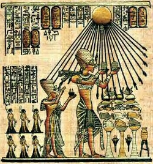

Aton dini, tek tanrılı bin olmakla birlikte bildiğimiz semavi dinlerden daha farklı ve karmaşık bir inanç sistemiydi. Zira Akhenaton’un monoteist (tek tanrıcı) dinin tanrısı, güneş diski ile sembolize edilmektedir. Bu fikrin kökleri Hz. Yusuf’un yaşadığı Hiksoslar dönemine kadar gider. Hiksoslar Mısır’ı işgal ettiklerinde, yerlilere ait tüm tapınakları yerle bir ederek Amon Rahipler topluluğunu dağıtmışlardı. Ancak Hiksoslar, değişik Asyalı topluluklardan oluştukları için belirli bir din anlayışları yoktu. Hz. Yusuf, işte bu dönemde Mısır’da yöneticilik yapmış ve insanları tek tanrı bayrağı altında toplanmaya çağırmıştır.
Hiksoslar Mısır’dan çıkarıldıktan sonra Amon rahipleri eski statülerine kavuştular. Tapınaklarını elden geçirilip yeniden inşa ettiler ve eskisinden daha kuvvetli bir şekilde devlet yönetiminde söz sahibi oldular. Bu durum, Mısır’daki yönetici tabakayı rahatsız etmiştir. Firavun Akhenaton döneminde ise yönetici tabaka ile Amon rahipleri arasındaki bağlar iyice koptu. Firavun, Amon tapınağının gücünü kırmak için Hiksoslar dönemindeki inanç sistemine benzer bir inanç sistemi öngördü. Kimi tarihçilerin iddiasına göre bu sistem, Hz. Yusuf’un tek tanrı anlayışından el almıştır.
Akhenaton yeni dinin yaygınlaştırılması ve benimsetilmesinde, mitoslardan sıkça yararlanmıştır. Aton kültü, henüz Akhenaton’un doğuşundan önce, ailesi tarafından tertip edilen bir ritüelle gerçekleşmiştir. Babası, Akhenaton henüz doğmadan yaptırmış olduğu sunî bir göl içinde, altın ile yaldızlanmış bir kayığı dolaştırmış, bu kayığın ismine de “Aton” ismini vermişti... Spekülasyonu biraz daha ileriye götürecek olursak, Akhenaton’un anne ve babasının, Amon-Ra rahiplerinin güçlenmesinden rahatsızlık duyarak, iktidarı kendilerinin mutlak hâkimiyetine dönüştürebilme gayretlerinden dolayı oğullarını genç yaşta güçlü bir eğitime tabi tuttukları iddia edilebilir.
IV. Amenofis M.Ö. 1375 yılında firavun olarak tahta çıktığında, kilden ve tahtadan yapılmış yüzlerce yerel ilahlarla birlikte Amon Ra, İsis, Osiris gibi yüce ilahların yanında Aton da sadece bir ilahtı. Ancak III. Amenhotep zamanında güneş ilahı Aton’a tapınma, Mısırlıların gözde ilahı Amon’a kıyasla öne çıkmış bir haldeydi. Tıpkı Yahve (Yehova) gibi insanlardan uzak kalmış tek başına yalnız bir Tanrı olarak Aton, diğer Mısır ilahları arasından öne geçip sıyrılmış olmakla birlkite; aslında cinsiyetsiz tektanrı tipinin Yahve’den önce ilk örneğini oluşturuyordu.
Aton dini efsane, sihir ve büyüyle ilgili her şeyi yasaklıyordu. Bu inanç sistemine göre, güneş tanrısı artık eskisi gibi küçük bir piramit ve şahinle değil, bir yuvarlakla belirtilmekte, yuvarlaktan dört bir yana saçılan ışınlar insan elleriyle son bulmaktaydı. Aton dininde Ölüm tanrısı Osiris’ten ve ölüler ülkesinden söz edilmesi yasaktı. Akhenaton kendisi de Aton dinine birtakım yeni öğeler katmış, bu öğeler sayesinde Aton dini, evrensel tanrı öğretisine yaklaşarak gerçek tektanrılığa dönüşmüştür. Bu, tanrının tekliği ve biricikliği düşüncesidir. Aton dini Akhenaton devrinde giderek güçlendi ve öğretisiyle tutarlı bir bütünlüğe kavuştu.
Bu ani ve köklü değişiklik karmaşaya yol açtı. Gelenkelredn kopan ve kendi içinde siyasal-dinsel çatışmaları kaynayan Mısır, uluslararası nüfuzunu kısmen yitirdi. Bu durum Akhenaton’un ardılı olan oğlu Tutankhamon’un, Teb’deki Amon Ra’nın ve diğer tanrıların rahiplerini yeniden kazanmasına kadar sürdü.
Akhenaton, Mitanni kralının karısı ile evlendi. Güzelliği ve zarafetinden dolayı karısına Nefertiti adı verildi. Ne var ki, tek tanrılı din anlayışı, Mısır tarihinde pek uzun sürmedi. Başlangıçta halkın büyük desteğini alan Akhenaton, Amon rahiplerin ve soyluların kışkırtması sonucu, halkın isyanlarıyla karşı karşıya kaldı Zira Aton adına inşa edilen tapınakların halkın ekonomik koşullarını kötüleştirmesi bu tepkiye kışkırtan bir nedendi. Şurası bir gerçektir ki, bir firavunun bir anda tüm tanrıları - özellikle de Amon’u- reddedip Aton’u yüceltmesi, Mısır için gerçekten gerek gündelik hayatta, gerek siyasi açıdan büyük bir değişim niteliği taşıyordu. Zira Akhenaton, Aton dinini kabul ettirirken o dönemde büyük güç sahibi olan Amon rahiplerine boyun eğdirmeyi bilmişti. O döneme ait kaynaklarda, Amon dinini adaletsizlikleri yüzünden için ilâhların Mısırlılar cezalandırarak erkek çocuğu vermediğini, firavunun da ilâhları simgeleyen putları yıktırıp hepsinin yerine Aton kültünü getirdiğini yazılmaktadır.
Akhenaton’un tek bir tanrıya inanması, halkta bir tedirginlik de yarattı. Özellikle Akhenaton’un düşmanları, onun eski firavunlar kadar güçlü olmayı amaçladığına ve artık büyük ölçüde rahiplerin eline geçmiş olan dinsel gücü yeniden elinde toplamak istediğine inanıyorlardı. Onlara göre tek bir tanrıya tapmak yanlıştı. Teb’de bir isyan çıktı ama ordu bu isyanı bastırdı. Ne var ki, tepkilerin arkası kesilmedi, bundan sonra Akhenaton karşıtı rahiplerin ayaklanmaları giderek arttı. Akhenaton, Teb’den ayrılıp göç etmese de bu onun Teb rahipleri tarafından öldürülmesini engelleyemedi. Firavunun ölmesi ile Amon rahipleri, halkı baskı ile çok tanrılı dine geri döndürdüler.
Akhenaton’un ölümden sonra kral olan Smenkhare’nin kısa sürede ölmesinin ardından Tutankaton, çok küçük yaşta Kraliçe Nefertiti’nin kızı Prenses Ankhesenpaaten ile evlenmişti. Tahta çıktığında on beş yaşındaydı. Saltanatın henüz başlarında iken Aton dininin terk ederek Amon inanç sistemine geri döndü.
Akhenaton’un ölümünden sonra Aton dini, Teb rahiplerinin etkisiyle yasaklanmıştı. Amon-Ra yeniden en büyük tanrı oldu. Amon-Ra’ya dua etmek için ‘ya rab’ ya da ‘ya rabbim’ dendi, bu sıfat ilk olarak Tevrat’a, sonra İncil’e, en sonunda da Kuran’a geçti. Duaların tanrı tarafından kabul edilmesi için, dua sonunda en büyük tanrı adı eklenerek ‘Amon’ ya da ‘Amen’ dendi. Bu söylem semavi dinlerde Amen, Amin biçimine dönüştü.. Bazı kaynaklar ise, IV. Amenofis (Akhenaton) tanrı Aton’un dünyadaki temsilcisi ve peygamber olduğunu ileri sürerek, okunan duaların sonuna, adından kaynaklanan ‘amen’ kelimesini eklediğini, bu geleneğin Hz. Musa tarafından Tevrat’a taşındığını ve oradan da Hıristiyanlık ve İslamiyet’e intikal ettiğini ileri sürmektedirler. Ancak Amenofis’in ismin değiştirerek Akhenaton yapması bu düşünceyi zayıflatmaktadır. Zira Aton dinine geçtikten sonra ismini değiştiren bir firavunun, eski isminin ön hecelerini bir peygamber ismi olarak kullanması akla yatkın değildir.
Tutankaton, tahta çıkıştığında çok güçlü olan Amon rahipleriyle anlaşarak Teb’e dönmüş ve adını Tutankamon’a, karısı Ankazaton’un ismini Ankazamon’a çevirmişti. Ondan sonra tahta çıkan ve Amon rahiplerinin iktidara taşıdığı General Horemheb, Akhenaton’u lanetledi ve Aton’un ismini her yerden sildirip Akhetaton kentini boşaltarak mülklerine el koydu.
Amon rahiplerinin desteğiyle başa geçen Tutankhamon, tahta çıktıktan sonra “Restorasyon Fermanı”nı yayınlayarak, Aton’u yasaklanmasa bile bu inanç sisteminin doğallığında yok olması için her türlü baskı ve kısıtlamayı getirmiştir.
Akhenaton’un döneminde Amon rahiplerinin gücü oldukça kırılmıştı. Ne var ki, Tutankamon döneminde Amon rahipleri eski statülerine tekrar kavuştular. Daha önce Akhenaton’un süvari komutanı olan Ay, vezir yani başbakan olarak tayin edildi. Tapınaklar yeniden yapıldı.

Aton dini törenleri.
Tutankhamon’un iktidarının onuncu yılında Amon dini yeniden kurumsallaştırılmasına rağmen Asya kökenli İbranilerden rahatsızlık duyulmaya başlandı. Zira Hz. Yusuf döneminde Nil Delta’sına yerleştirilmiş olan İbraniler, devletin kilit noktalarına yerleşerek Mısır’da ciddi bir ekonomik ve siyasi güç olmaya başlamışlardı. Ne var ki, Hz. Yusuf’tan hemen sonra İbraniler, devlet kademelerinden uzaklaştırılarak angarya işlerinde çalıştırılmaya başlandılar. Bu İbranilerde Mısır iktidarına karşı ezilenlerin muhalefetini doğurdu ve iktidarın zulmüne karşı çıkmaya başladılar. Özellikle Teb’li rahipler çözümün İbranilerin dış dünya ile bağlantıları kesilerek yok edilmesinde görüyorlardı. Ne var ki, bu şiddet yanlısı politikayı Tutankamon benimsemedi. Bu yüzden de din adamları ve devlet bürokrasisi içinde Tutankamon’a karşı muhalefet gelişmeye başladı. Öyle ki bu muhalefet, işi Tutankamon’un zor yoluyla tasfiyesine kadar götürdü. Sonuçta Tutankamon, ordu komutanı Horemheb’in de içinde bulunduğu çete tarafından genç yaşta öldürüldü. Bazı mısırologlara göre Tutankhamon, iktidarı ele geçirmek isteyen Horemheb tarafından başına sert bir cisimle vurularak öldürülmüştür.
Tutankamon’un öldürülmesinden sonra yönetimde bir boşluk yaşanmaya başladı. Bir süre Vezir Ay, firavunluk tahtına vekâlet etti. Bu sırada devlet içinde peş peşe karanlık cinayetler yaşanıyordu. Kocası Tutankamon’un öldürülmesinde sonra ikinci kez dul kalan kraliçe Ankesenpaten, bu gidişattan korkuya kapılarak Hitit Kralı Suppiluliuma’ya gizlice bir mektup gönderdi ve oğullarından birinin kendisine koca olarak yollanmasını istedi. Hitit kralı, bu çağrıya icabet ederek oğullarından birini Mısır’a gönderse de bu Hititli prensten bir daha haber alınmadı. Muhtemel ki, bu prens de Horemheb çetesi tarafından bir suikasta kurban gitti. Bunu üzerine çaresiz kalan kraliçe Ankesenpaten, yaşlı vezir Ay ile evlenmek zorunda kaldı. Ancak Ay’ın kısa bir süre sonra ölümüyle, rakipsiz kalan Horemheb yönetimi devraldı.
Horemheb Amon dinini daha da kurumsallaştırarak Aton inanç sistemini iyici zayıflattı. Karnak’ta bulunup bugün Louvre Müzesi’nde sergilenen statü, Amon’un bu zaferini sembolize etmektedir. Bu statüde İlah oturarak, kucağına sığınan Tutankhamon’un küçük bir statüsünü omuzlarından tutmaktadır. Fakat bu küçük statünün başı kırılmış ve Tutankhamon’un ismi kazılarak yerine Horemheb ismi yazılmıştır. Bu Horemheb’in hanedanlığı ele geçirdiğinin sembolüdür.
Horemheb’in de varis bırakmadan ölmesi sonucunda Msır ordularının ünlü komutanı I.Ramses, 19.hanedanın ilk firavunu oldu. Ardından gelen oğlu I. Seti, dönemi boyunca Asya’dan gelen saldırılarla savaştı. I. Seti’den sonra da meşhur firavun II. Ramses hanedanlık tahtına oturmuştur.
II. Ramses Mısır geleneksel dini Amon geleneklerine ve inancına sahip bir firavundur. Aton dinine karşı şiddetli muhalefet yapan ve bu dini tasfiye eden Teb rahipleri tarafından desteklenmiştir. Ancak II. Ramses döneminde dinsel muhalefet Aton dininin muhalefeti değil, yepyeni bir dinin muhalefetidir. Bu din Hz. Musa’nın yaydığı tanrı Yehova’ya inanan tek tanrılı Musevilik (Yahudilik) dinidir. Aton dini, kuruluşunda Hz. Yusuf’un düşüncelerinden etkilenmiştir.
Aton dininin kurucu IV. Amenofis, Filistin’den Mısır’a göç eden Yusuf kavmi ile Hz. Musa arasındaki bir tarihte yaşamıştır. Yani Hz. Musa, hem Akhenaton’un öğretisini yaşamış ve öğrenmiştir, hem de II. Ramses döneminin İbraniler üzerindeki baskı ve sömürüsüne tanık olmuştur. Bu yüzden de II. Ramses’ten İsrailoğulları’na eziyet etmemesini istemiştir. Hz. Musa, 10 emrin yazılı olduğu Akneton tapınaklarının tek tanrılı dinine inanmıştır. Bu nedenle Aton dini nasıl ki, Hz. Yusuf’un inanç sisteminden etkilenmişse Hz. Musa da Aton dininden etkilenmiştir. Başka bir deyişle Aton dini, Museviliğin bir önceli gibidir.
II. Ramses, yeni şekillenen ve iktidarını tehdit eden ilk semavi din Yahudiliğe karşı geleneksel çok tanrılı Amon dinini savunmuştur. Bu II. Ramses’e bur tanrısallık vasfı da kazandırmaktadır. Mısır geleneksel inançlarına göre, firavun tanrı adaletini tanrı adında yeryüzünde icra eden tanrı kraldır. Böylece fiili olarak firavunun tanrılaştırılmaktadır. II. Ramses’in kendini tanrı gibi görmesi de bu inanç biçimine dayanır. Karşısında yeni gelişmekte olan Hz. Musa dini ise tanrıyı yersel bir ilah olmaktan çıkarıp, göksel bir güç olarak tarif etmektedir. Hz. Musa yeni din anlayışı ve adalet vurgusu güçlü söylemleri ile Mısır’ın ezilen, köleliğe ve angaryaya mahkûm edilen İsrailoğulları tarafından destek görmektedir. Zira Hz. Musa’nın kendisi de İsrailoğulları kavmindendir. Hz. Musa ile yardımcı peygamber olarak bilinen Hz. Harun aynı zamanda yaşadılar ve her ikisi de Firavun II. Ramses ile çatışmaya girdiler. II. Ramses bu çatışmada hak dinine karşı kendisini tanrı yetkileriyle donatan geleneksel Amon dininin temsilcisidir. Hz. Musa, tanrıdan aldığı vahiylerle, Mısır köleci sistemi altında ağır baskı, sömürü ve zulüm cenderesi içinde yaşayan İsrailoğulları’na kurtuluş yolunu gösterir. Aynı zamanda Hz. Musa, yaymaya çalıştığı din ile köhnemiş olan, tarihsel miadını dolduran ve bir avuç köle sahibi elitlere hizmet eden Amon dini ve onun katı temsilcisi II. Ramses’e karşı, yeni bir toplumsal nizamın temsilcisidir.
Bu çatışmada tanrı Yehova, firavun II. Ramses’i cezalandırarak, Mısır’ı yedi yıl süren kuraklığa mahkûm eder. Bu dönemde Nil nehrinde su seviyesi alabildiğine düşer ve aşırı sıcaklıklar başlar. Ülkenin semaları çekirgelerin istilasına uğrar ve buğdaylara güve musallat olur. Hz. Musa’nın bu felaketi kullanarak halkı kışkırtacağını düşünen II. Ramses, Musa’yı kavimi ile birlikte Filistin’e göçe zorlamıştır.